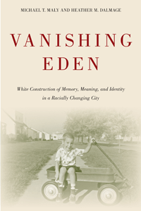

Tracking the complexities of whiteness through an analysis of the experiences and memories of whites who lived in racially changing Chicago neighborhoods
Tracking the complexities of whiteness through an analysis of the experiences and memories of whites who lived in racially changing Chicago neighborhoods


 Tracking the complexities of whiteness through an analysis of the experiences and memories of whites who lived in racially changing Chicago neighborhoods
Tracking the complexities of whiteness through an analysis of the experiences and memories of whites who lived in racially changing Chicago neighborhoods

|  |
Vanishing EdenWhite Construction of Memory, Meaning, and Identity in a Racially Changing CityMichael T. Maly and Heather M. Dalmagepaper EAN: 978-1-43991-119-8 (ISBN: 1-4399-1119-3) |
"In this skillfully conceived and persuasively argued book, Michael Maly and Heather Dalmage deftly blend oral and archival history with cultural critique to show how whiteness was learned and legitimated among young people living in Chicago neighborhoods that resisted desegregation during the 1960s. Vanishing Eden is a careful and critical yet empathetic and discerning study of how specific practices, processes, ideas, ideologies, rationalizations, and justifications mask the privileges of whiteness and preserve the injustices of the racial order."
—George Lipsitz, author of How Racism Takes Place
For many whites, desegregation initially felt like an attack on their community. But how has the process of racial change affected whites’ understanding of community and race? In Vanishing Eden, Michael Maly and Heather Dalmage provide an intriguing analysis of the experiences and memories of whites who lived in Chicago neighborhoods experiencing racial change during the 1950s through the 1980s. They pay particular attention to examining how young people made sense of what was occurring, and how this experience impacted their lives.
Using a blend of urban studies and whiteness studies, the authors examine how racial solidarity and whiteness were created and maintained—often in subtle and unreflective ways. Vanishing Eden also considers how race is central to the ways social institutions such as housing, education, and employment function. Surveying the shifting social, economic, and racial contexts, the authors explore how race and class at local and national levels shaped the organizing strategies of those whites who chose to stay as racial borders began to change.
Excerpt available at www.temple.edu/tempress
“In Vanishing Eden Michael Maly and Heather Dalmage ask important and original questions: In the wake of civil rights battles, how did Chicago's whites respond to racial change? How do their memories of their old neighborhoods shape the way they think about race today? How do ‘post–civil rights’ understandings of whiteness and color-blindness continue to inscribe racial boundaries on urban space? Their answers, the result of extensive interviews with white Chicagoans, shed light on the troubling persistence of racial segregation and inequality today.”
—Thomas J. Sugrue, author of Sweet Land of Liberty: The Forgotten Struggle for Civil Rights in the North
“Maly and Dalmage skillfully use the case of black movement into working-class white neighborhoods on the Southwest and West sides of Chicago to highlight some of the ways that whites actively construct their racial identities Through a series of fascinating retrospective accounts, former white residents of these neighborhoods nostalgically recall life lived behind racial boundaries. As social and political change challenged these boundaries, so too did they transform residents’ unquestioned white privilege into a proactively asserted identity of rights and victimization. Vanishing Eden is a powerful, captivating account of the tensions and contradictions that are defining characteristics of white racial identity.”
—Monica McDermott, author of Working-Class White: The Making and Unmaking of Race Relations
"The focus across the six chapters on racial change and the formation of the ideology of whiteness allows the authors to explain why white flight took place in Chicago between 1966 and 1980, and the legacies of that abandonment's impact on not eradicating but perpetuating large-scale social segregation.... The book shows how deeply entrenched negative racial attitudes are in the US, and that even with changing times—the election of Barack Obama as the 44th President of the US—the white respondents in the book still carry memories of how their white privileges were trampled on when integration took place...Summing Up: Recommended."
—Choice
"Sociologists Maly and Dalmage interviewed dozens of white people who grew up on Chicago's West and Southwest sides in the 1970s, when riots against black people and civil-rights demonstrations were commonplace.... Although the authors reject the idea of white racism as an individual pathology or 'prejudice,' in the end they come back to the need for cross-racial acquaintance and friendship.... Forging spaces where such conversations could take place might just be a planning issue."
—Planning
"The authors draw on both archival data and in-depth interviews to present a well-crafted narrative of how people make sense of a changing world.... Particularly fascinating is the authors' analysis of 'nostalgia narratives' that create an idyllic image of a good, homogeneous community of hardworking and virtuous second- and third-generation immigrants. These accounts enhance the victimhood of the residents while overlooking, of course, that this 'Eden' was created and maintained by systemic racism. This is where the authors make an important contribution to our understanding of racial discourse.... Vanishing Eden will be of particular interest to scholars of racial conflict, racial ideology, and urban studies."
—Contemporary Sociology
"This book strengthens understanding of how white people construct meaning, identity, and memories in relation to whiteness, even as they experience racial changes in their daily life, neighborhoods, communities, and across the nation.... This book provides extensive and in-depth discussions on whiteness and racism within a specific context and helps improve one's understanding of how and why whites react to desegregation efforts differently than others..... The use of historical examples and individual narratives demonstrate the changing meaning of whiteness. Discussion on intersectionality between race, gender, and social class is supported by rich data. This book helps inspire one to learn more about the racial changes in American society over time and to search for a solution to end the endemic racism."
—Journal of Sociology and Social Welfare
Acknowledgments
1. Racial Change, Neighborhoods, and Whiteness
2. Controlling the Change: White Ethnics, White Victims
3. On the Borders (co-authored with Nancy Michaels)
4. The End of an Idyllic World
5. Racial Ignorance, Bounded Empathy, and the Construction of Racial Solidarity
6. Conclusion
Methodological Appendix
Notes
References
Index
Michael Maly is Associate Professor of Sociology and Director of the Policy Research Collaborative at Roosevelt University in Chicago. He is the author of Beyond Segregation: Multiracial and Multiethnic Neighborhoods in the United States (Temple).
Heather M. Dalmage is Professor of Sociology and Director of the Mansfield Institute for Social Justice and Transformation. She is the author of Tripping on the Color Line: Black-White Multiracial Families in a Racially Divided World.
Urban Studies
Race and Ethnicity
Sociology
Urban Life, Landscape, and Policy, edited by Zane L. Miller, David Stradling, and Larry Bennett.
Urban Life, Landscape, and Policy Series, edited by Zane L. Miller, David Stradling, and Larry Bennett, features books that examine past and contemporary cities, focusing on cultural and social issues. The editors seek proposals that analyze processes of urban change relevant to the future of cities and their metropolitan regions, and that examine urban and regional planning, environmental issues, and urban policy studies, thus contributing to ongoing debates.
© 2016 Temple University. All Rights Reserved. This page: http://www.temple.edu/tempress/titles/2310_reg.html.